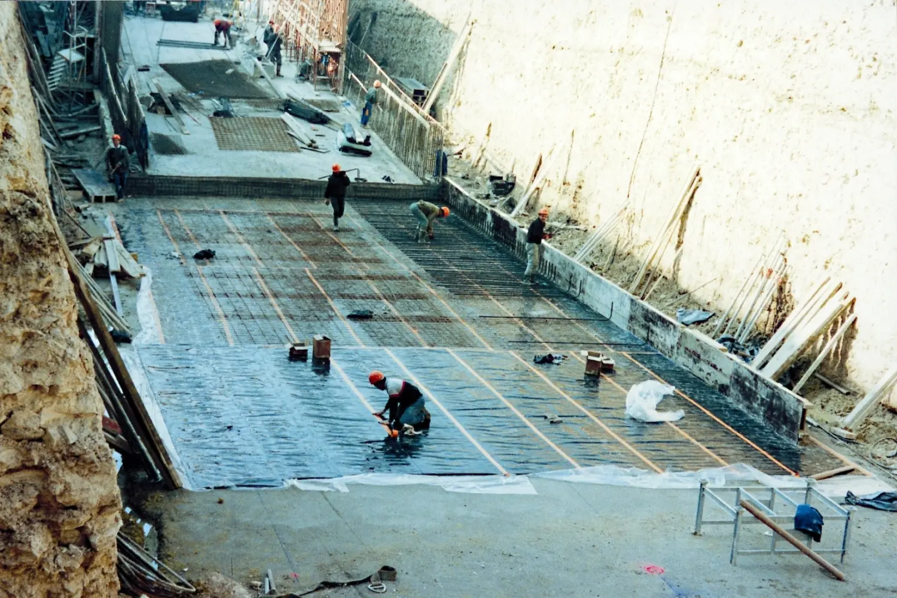
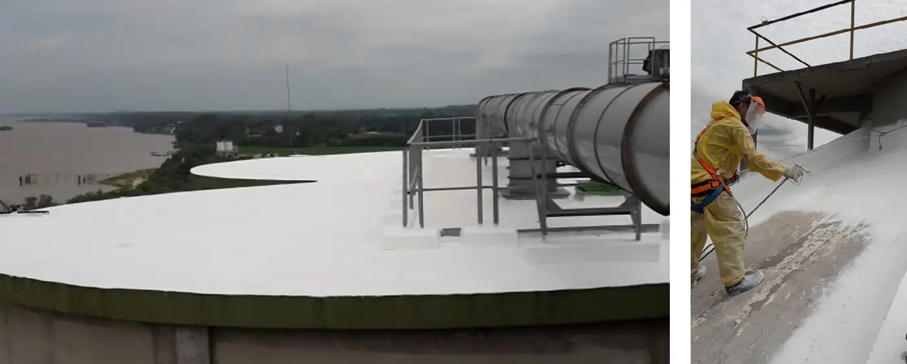
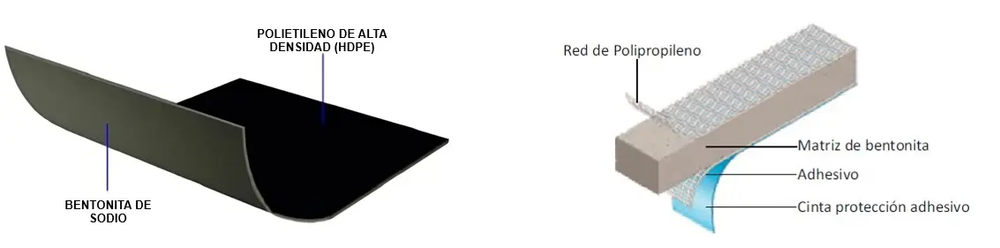

Impermeabilización
Soluciones para impermeabilización

Sistemas de impermeabilización a través de MEMBRANAS LÍQUIDAS
Las membranas líquidas son compuestos poliméricos con gran poder impermeabilizante. Es decir, se utilizan para proteger todo tipo de estructuras de la acción del agua y otros agentes ambientales que provocan su deterioro.
En general, las membranas líquidas se caracterizan por tener una gran elasticidad lo que permite formar una membrana uniforme y continua sobre la superficie. Además, resultan métodos amigables para impermeabilizar debido a su versatilidad y fácil aplicación en comparación a otros métodos.
No obstante, para que su aplicación sea existosa, es necesario realizar un relevamiento previo a cargo de un especialista con conocimientos en sistemas de impermeabilización y su correcta instalación. De este modo, se lograrán buenos resultados siempre y cuando:
- Se realice una adecuada ponderación del estado de la superficie a impermeabilizar más el costo de llevar la misma al estado necesario para aplicar esta tecnología.
- Se realice una correcta selección del tipo de membrana líquida a utilizar (compuestos acrílicos, poliuretánicos o poliureas) considerando la vida útil deseada por el cliente, el mantenimiento acordado y los costos asociados.
- Se cuente con equipo experimentado y el herramental necesario para su instalación.

Aplicaciones
- Pueden ser utilizadas sobre hormigón, mampostería, superficies metálicas o madera.
- Existen variedades de membranas para gran cantidad de usos:
- Losas horizontales y verticales
- Balcones
- Cuartos de máquinas
- Aplicaciones sumergidas (por ejemplo, fuentes de agua) o terrazas verdes
- Cubiertas con tránsito peatonal
- Losas con tránsito vehicular destinadas a estacionamientos
- Tableros de puentes de viaductos y autopistas
- Superficies inclinadas o abovedadas
- Techos, terrazas, tinglados de mampostería, hormigón, mortero, chapa, fibrocemento, cerámica, ladrillos, asfálticos, etc.
Ventajas
- Fácil aplicación, aún en climas muy fríos.
- Admiten su aplicación sobre hormigón húmedo.
- Rápido curado y puesta en servicio.
- Debido a su gran elasticidad, soportan los ciclos térmicos durante largos períodos sin alterar sus propiedades ni prestación.
- Presenta alta resistencia a los agentes ambientales (moho, hongos, etc) y a la radiación UV. Gran durabilidad.
- Fácil mantenimiento. Permiten aplicación capa sobre capa.
- Resistencia al desgate y la abrasión.
- Permite una buena disipación del calor de la superficie mejorando las condiciones energéticas en el interior de edificios.
- Excelente adherencia sobre gran variedad de sustratos con buen poder cubritivo.
- No contiene VOC, componentes tóxicos ni inflamables lo que aporta propiedades amigables con el medioambiente.
Sistemas de impermeabilización activos TECNOLOGÍA BENTO
La bentonita es una arcilla que tiene propiedades hidroexpansivas, es decir, tiene capacidad de absorber agua aumentando su volumen. Ejemplo de referencia: Esponja.
A medida que absorbe agua, la bentonita se expande hasta alcanzar la máxima presión de expansión y luego, al estar confinada, se autocompacta y se transforma en una barrera impermeable.
Esta arcilla combinada con distintos polímeros, ofrece un sistema de membranas y juntas impermeabilizantes de muy fácil colocación.
Estos sistemas son doble impermeabilizantes ya que poseen 2 barreras para el paso del agua:
- Barrera física de lámina de HDPE (polietileno de alta densidad)
- Barrera de bentonita

Aplicaciones
La tecnología bentonítica se utiliza normalmente en construcciones nuevas.
Resulta eficiente para impermeabilizar estructuras enterradas sometidas a la presión efectiva del agua.
Impermeabilizaciones en Obras de Ingeniería Civil y Hidráulica:
- Estacionamientos subterráneos
- Sótanos
- Bases de fundaciones y muros de contención
- Piscinas enterradas, piletas de recolección de agua, lagunas
- Alcantarillas
- Caños de gas
- Túneles carreteros, ferroviarios y del metro
- Cámaras de inspección
- Fosos de ascensores
Protección del Suelo:
- En lugares de almacenamiento de subproductos industriales
- En estaciones de servicio
- En industrias de transformación y servicio.
Ventajas
Los principales beneficios de esta tecnología son:
- Doble sistema impermeabilizante (HDPE + bentonita)
- Facilidad de colocación, exenta de errores de instalación
- Aplicable en contacto con hormigón fresco o seco y sobre mampostería, sin una particular preparación de la superficie
- Práctica puesta en obra con clavadura a martillo, a pistola o con engrapadora
- Autosellado por eventuales roturas gracias a la propiedad de expansión de la bentonita
- Posibilidad de aplicar sobre madera o metal con acuerdos oportunos
- Utilización en un amplio rango de temperaturas
- Productos no tóxicos
- Resistencia a las agresiones químicas y a la rotura. Alta performance para impedir la infiltración de hidrocarburos líquidos y gaseosos y permite su utilización en áreas conflictivas de altos contenidos salinos, alcalinos o con niveles de acidez elevados
- Óptima resistencia al escurrimiento de agua sobre la membrana
- Ofrece una alta expectativa de VIDA ÚTIL que supera los 100 años
- Facilidad de almacenamiento en depósitos y en obra, gracias a la protección de plástico que envuelve el producto
La solución óptima al problema planteado.
El Departamento Técnico, formado por profesionales de amplia experiencia en el sector, asesora eficientemente y de manera personalizada.